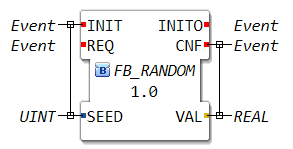
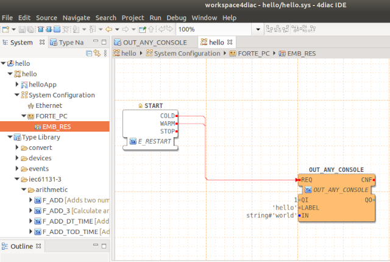
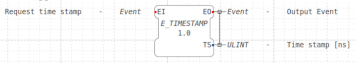
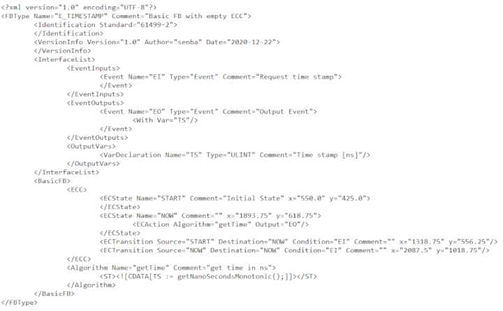
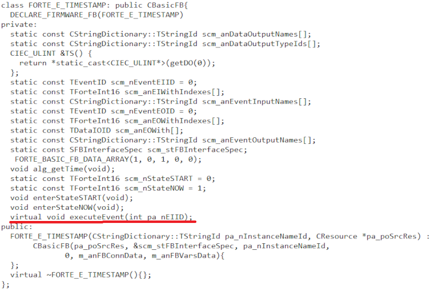
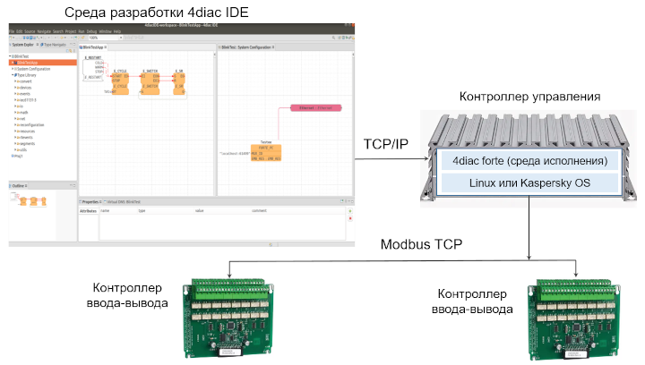
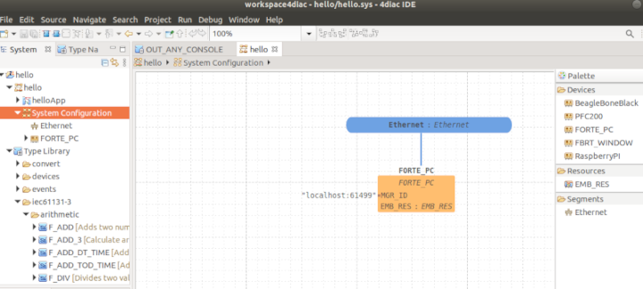
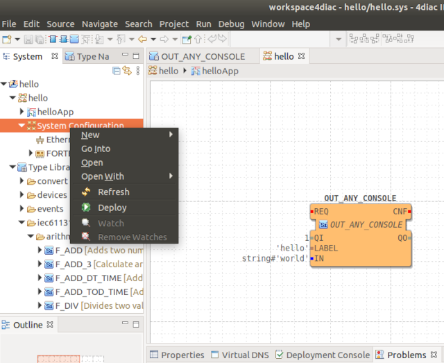

В данной статье я постараюсь поделиться результатами, полученными командой кафедры 307 МАИ в процессе сотрудничества с Лабораторией Касперского в области разработок защищенных систем управления для АСУ ТП, IoT и умного дома.
Традиционно мир программирования для встраиваемых решений делится на программирование ПЛК, где используются среды программирования стандарта IEC 61131 и разработку на С/С++ для микроконтроллеров и встраиваемых устройств. Стандарт IEC 61131 включает 5 языков программирования ST, FBD, IL, LD, SFC и позволяет абстрагироваться от особенностей аппаратной реализации устройства и протоколов передачи данных. Это значительно сокращает время разработки и уменьшает число ошибок.
Нельзя не отметить решения, которые часто используются при разработке прототипов систем:
Однако, эти инструменты больше нацелены на быстрое прототипирование и затрудняют последующий переход от прототипа к решению.
Программирование на IEC 61131, например, на языке структурированного текста позволяет быстро описать алгоритм управления в терминах входных/выходных переменных и операций над ними. При разработке данного стандарта в качестве вычислительного модуля рассматривался отдельный программируемый контроллер. Описывать взаимодействие нескольких контроллеров в рамках единой системы управления возможно, но может быть не очень удобно. Камнем, который иногда бросают в огород IEC 61131, является заточенность только под системы управления. Python, java script или даже С++ используются в различных областях, а ST или FBD только в промышленной автоматизации.
IEC 61499 был предложен, как расширение стандарта IEC 61131 предназначенное для распределенных систем управления, состоящих из нескольких контроллеров. Основным строительным элементов IEC 61499 является функциональный блок похожий на конструкцию языка FBD.

Рис.1. Функциональный блок в IEC 61499.
Функциональный блок в IEC 61499 имеет входы данных, выходы данных, а также дополнительно по отношению к IEC 61131, входы и выходы событий (отмечены красным). В момент прихода входного события (REQ) читаются входные переменные, срабатывает логика функционального блока. Логика функционального блока производит вычисления, присваивает выходные переменные и инициирует выходные события (CNF). Функциональный блок может иметь выделенные события для инициализации (INIT) и подтверждения инициализации (INIT0). Программа на IEC 61499 представляет из себя граф в узлах которого помещаются функциональные блоки, связанные между собой по данным и по событиям. Использование событий предоставляет явную возможность управления потоком выполнения в распределенной системе.
Для IEC 61499 есть симпатичные реализации среды исполнения Eclipse 4diac forte и среды разработки Eclipse 4diac IDE. Они доступны по открытой лицензии EPL. Среда разработки может работать на Linux, Windows или Mac. Среда исполнения работает на любой posix совместимой ОС и даже на микроконтроллерах. Для разработки защищенного решения представляется перспективным запуск среды исполнения IEC 61499 4diac forte на Kaspersky OS.
Пример минимальной программы "Hello world" в среде разработки 4diac выглядит следующим образом:

Рис.2. Минимальная программа в среде 4diac.
Среда разработки позволяет описать программу, как набор связанных функциональных блоков и в действительности работает только c описаниями интерфейсов функциональных блоков. Существует возможность готовые функциональные блоки из библиотеки или создать свой собственный. Например, можно в IDE создать функциональный блок со следующим описание для получения текущего времени:

Рис.3. Интерфейс функционального блока E_TIMESTAMP
Среда исполнения анализирует только интерфейс функционального блока. Внутри среды исполнения для описания функционального блока используется xml:

Рис.4. Пример декларации функционального блока E_TIMESTAMP
Среда исполнения содержит ядро для работы с событиями и библиотеку реализаций функциональных блоков. При загрузки приложения создаются экземпляры используемых функциональных блоков и запускается обмен сообщениями между ними. Для нового функционального блока IDE может сгенерировать заготовку класса на C++. Например, для E_TIMESTAMP исходный код для forte выглядит так:

Рис.5. Класс, реализующий логику работы функционального блока E_TIMESTAMP
Основная логика работы функционального блока реализуется в виртуальном методе void executeEvent(int pa_nEIID); Именно этот метод должен реализовать разработчик, если создает собственный функциональный блок.
В стандартной библиотеке 4diac есть функциональные блоки для работы с вводом-выводом, специфичные блоки для систем управления, например PID и коммуникационные для различных протоколов. 4diac из коробки включает поддержку распространенных промышленных протоколов Modbus TCP, Modbus RTU, MQTT, OPC UA и других.

Рис.6. Возможная архитектура системы с 4diac
Для меня крайне привлекательными при работе с 4diac стали:
Среда исполнения написана на классическом С++, что позволяет добавить нужный протокол полевой шины, работу с вводом-выводом или запустить на неподдерживаемой платформе. Например, мы успешно добавляли DBUS, CAN и работу с кастомной периферией и даже обработку видеопотоков.
При загрузке проекта на контроллер описание функциональных блоков и информация
об их связях передается в среду исполнения forte. Для загрузки функционального блока на устройство необходимо:
Пример интерфейса для задания конфигурации устройств и сетей представлен ниже:

Рис. 7. Определение конфигурации устройств системы
Для загрузки проекта на устройство в 4diac IDE необходимо выполнить команду deploy.

Рис.8. Загрузка проекта на устройство
Скачать и установить среду разработки Eclipse 4diac IDE можно с сайта eclipse. Для работы IDE предварительно необходимо установить java.
Скачать исходный код Eclipse 4diac forte можно из репозитория eclipse:
git clone https://git.eclipse.org/r/4diac/org.eclipse.4diac.forte
Для сборки под Windows можно выполнить команды:
cd org.eclipse.4diac.forte
mkdir build
cd build
cmake .. -DFORTE_ARCHITECTURE=Win32 -DFORTE_COM_ETH=ON -DFORTE_COM_FBDK=ON -DFORTE_COM_LOCAL=ON -DFORTE_TESTS=OFF -DFORTE_TESTS_INC_DIRS=${forte_boost_test_inc_dirs} -DFORTE_TESTS_LINK_DIRS=${forte_boost_test_inc_dirs} -DFORTE_MODULE_CONVERT=ON -DFORTE_MODULE_IEC61131=ON -DFORTE_MODULE_UTILS=ON ../../ -DFORTE_USE_STD_11=ON
Исполняемый файл будет тут: build\src\Debug\forte.exe
Для сборки под Linux или другую posix совместимую операционную систему можно выполнить команды:
cd org.eclipse.4diac.forte
./setup_posix.sh
Исполняемый файл будет размещен в каталог: build\posix\src\forte
После запуска на выполнение forte пытается считать проект для запуска из файла forte.fboot (которого может не быть) и ждет загрузки проекта от среды разработки. Обычно выдается следующее сообщение:
INFO: T#18446743746374136594: FORTE is up and running
INFO: T#18446743746374744094: Using provided bootfile location set in CMake: forte.fboot
INFO: T#18446743746375534594: Boot file forte.fboot could not be opened. Skipping...
В среде разработки можно просматривать значения на входе и выходе функциональных блоков во время работы программы при помощи команды watch, которую можно вызвать по правой клавише мыши.
Как я упоминал ранее, среду исполнения forte можно собрать для различных операционных системах, например, Windows, Linux, Freertos. Недавно студенты кафедры 307 Московского Авиационного Института запустили forte на Kaspersky OS CE (более детально я расскажу о процессе портации и проекте forte4kos в следующей статье).